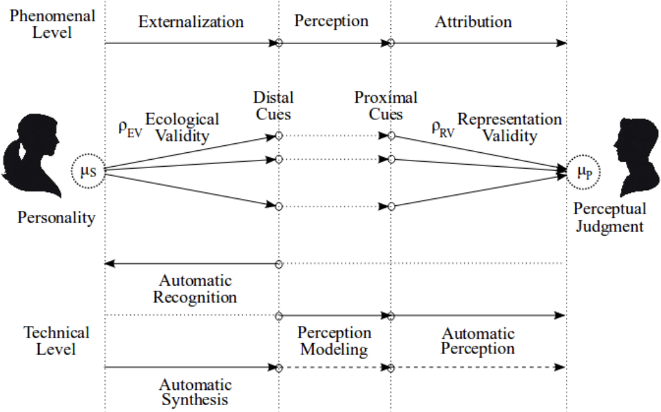
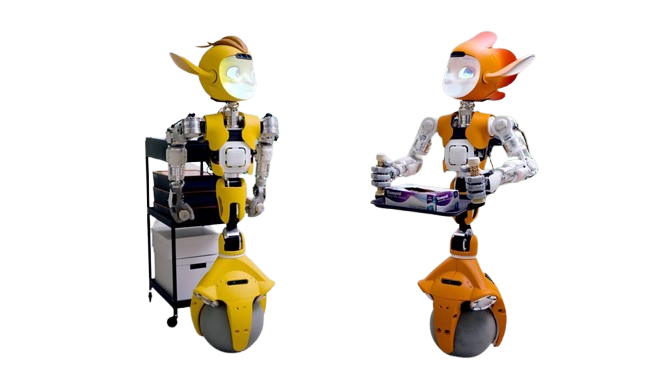
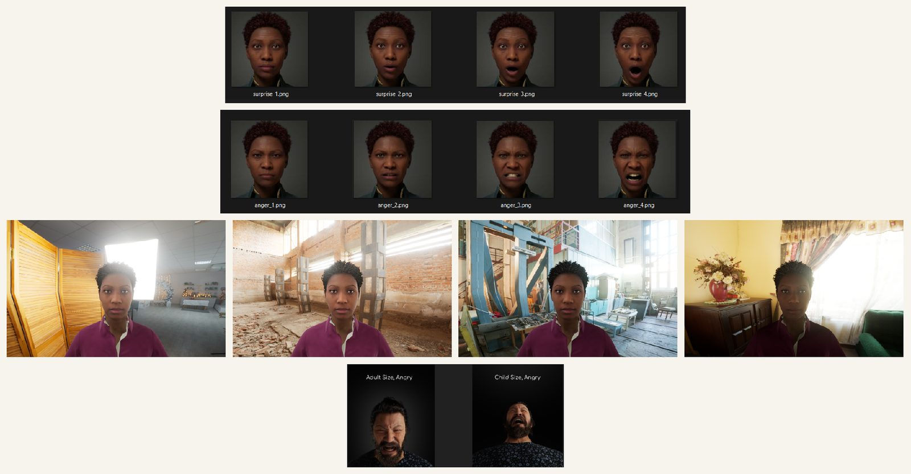
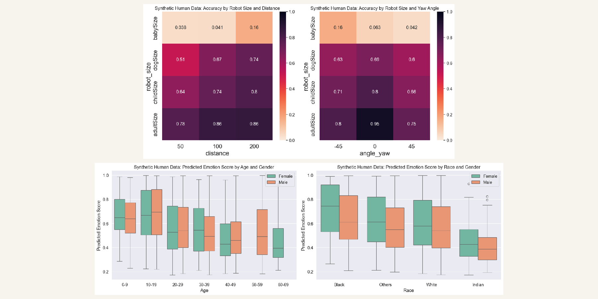
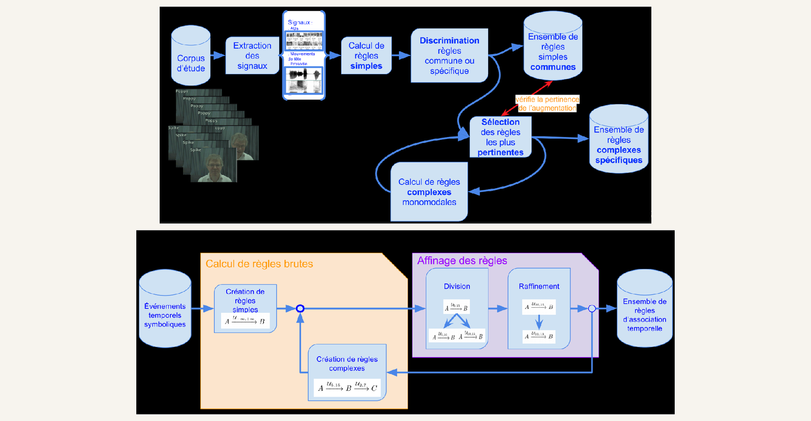
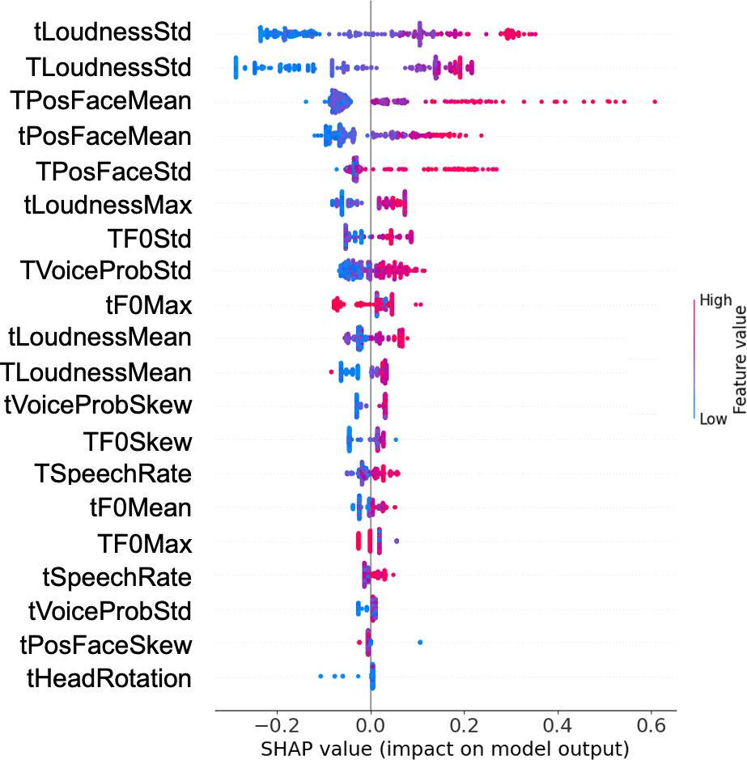
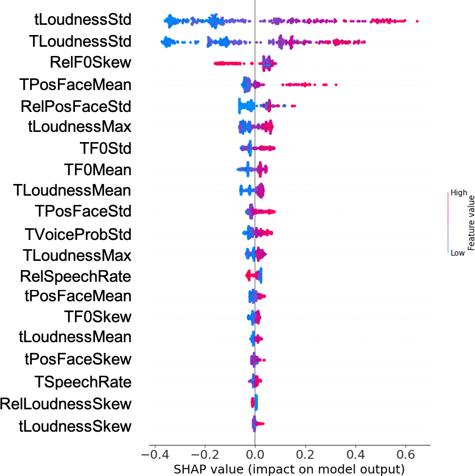

Ten years asking one question across affect, patient risk, robot behaviour, genomes and multi-agent coordination — and making the resulting models trustworthy enough to deploy. Currently building plant genomic foundation models at Living Models.
How do you extract a reliable signal about a hidden state — affect, patient risk, robot behaviour, genome function, agent coordination — from multimodal or sequential data, and make the resulting model trustworthy?
A hidden state is never observed directly. It is read through observable cues, each only partly valid — Brunswik's lens, 1952. The weakest cues often carry the information the salient ones do not, which is why subtle signals are worth the trouble of modelling.
Interpretability does more than explain. It lets you test what a model learned against the literature of the field, and sometimes find explanations deeper than the ones already described. Every step below is the same question applied to increasingly complex data.

Genomic foundation models (BOTANIC-0 / BOTANIC-1) across dozens of crop species: long-context Mamba/SSM and hybrid architectures at single-base resolution, used for questions such as identifying the role of a DNA sequence in hormone synthesis. Post-training goes beyond masked language modelling — functional supervision, regulatory atlases, breeding-relevant readouts — with evaluation suites meant to be meaningful to breeders rather than to leaderboards. The stack itself is agentic: Claude and Gemma orchestrate training runs and the deployment of an LLM augmented with bioinformatics tools.
Coordination between LLM agents inspired by hormonal mechanisms, designed explicitly with alignment in mind: long-horizon tasks, democratic voting, feedback signalling as a shared control channel. Documented an open-loop coordination failure — signals emitted but no longer feeding back into shared state — which is the kind of silent degradation a multi-agent system has to be built to notice.
Pathology detection from vocal biomarkers for emergency triage: a life-critical variant of the same problem. Fine-tuned audio models (Whisper, Wav2Vec2, EnCodec) alongside raw signal processing, fused into text, acoustic and multimodal risk scores under latency constraints — diarization, transcription, information validation, spoken response, with patient history in the loop. Led the ESYNAPSE grant, a France 2030 "Pionniers de l'IA" laureate worth up to €10M, and worked with clinical partners to validate models on real emergency medical data.
Perception → reasoning → action, in real time, under human-robot safety constraints for the Mirokai robot. Here interpretability stops being an abstract topic and becomes a deployment constraint.

Making a small model speak Mirokaï. The robot needs an LLM to track the history of an exchange, trigger the right tools and stay inside its narrative backstory (its "Lore") — but embedded hardware makes inference on a large model impractical. I generated synthetic dialogues with a larger model, cleaned the dataset of hallucinations and other errors, and used it for PEFT-LoRA fine-tuning of Llama-3.2-1B: a teacher-student route to large-model behaviour at an embeddable size.
Generating the data you cannot collect. A parameterised MetaHuman dataset with emotion, intensity, gender, ethnicity, environment, distance, viewing angle and robot size as controlled axes. Variations that are impossible to balance in real collection become dimensions you can sweep.

Then using it to anticipate deployment bias. Emotion recognition collapses when the robot is small — the same model that reaches 0.86 accuracy at adult size drops to 0.04 at baby size, a factor of twenty — and the predicted score drifts with age, gender and ethnicity.

Modelling rapport in conversational human-agent interaction — the closest thing to pure HCI in my career, and the direct continuation of the HHAI 2022 paper in the deep dive below. Interpreted dyadic models (LSTM/GRU with attention), moving from estimating rapport to generating behaviour that builds it, validated through perceptual experiments with humans. The question underneath: how does an agent's behaviour shape its user's?
Predicting medication non-adherence from SNIIRAM reimbursement records on French National Health Data, taking prediction accuracy from 60% to 90%. SHAP and LIME were not a presentation layer here — they carried real clinical decisions, which is a different bar for an explanation. Published at NeurIPS ML4H and MICCAI.
Recognising social signals for affective virtual agents, with no black box anywhere in the pipeline. Signal extraction (action units, prosody, head motion) feeding TITARL temporal association rules, then a discrimination metric to isolate the rules specific to one interpersonal attitude. Two generation strategies — cloning a speaker's signals, or applying the learned rules — both evaluated with users. Five publications (ICMI, IVA, WACAI, RIA, LREC) and a visiting period at USC ICT.

Risk-prevention models where being wrong costs a life (Semeia, e-sensia). Alignment in social robotics and deployment bias anticipated before deployment rather than discovered after (Enchanted Tools). Multi-agent coordination designed around alignment from the start (Concilium).
SHAP and LIME driving clinical decisions (Semeia), interpretable temporal rules instead of a black box (PhD), and interpretability as a hard deployment constraint on embedded robots (Enchanted Tools). An explanation is only worth something if it changes what you do next.
Rapport in human-agent interaction (Inria, HHAI 2022) and how an agent's behaviour shapes its user's — measured, then fed back into how the agent generates behaviour in the first place.
Grimberg, Janssoone, Clavel & Cassell, HHAI 2022 — ENS Paris · Carnegie Mellon & Inria · Télécom Paris. Teenagers tutor each other in algebra over Skype, two sessions of about thirty minutes per dyad. The corpus comes from Madaio et al. (2017); we did not collect it, we re-exploited and re-annotated it.
The target does not exist in the signal; it has to be constructed. Four independent judges recruited on Amazon Mechanical Turk rated every 30-second slice on a 1–7 Likert scale. The most distant rating was discarded and a bias correction applied to the remaining three.
High-level features from OpenFace (non-verbal) and openSMILE (para-verbal), in two families. Individual features describe one participant — SpeechRate, F0, Loudness, VoiceProb, PosFace, GazeChange, HeadRotation, each as mean, standard deviation, skew and max. Relative features describe the two participants against each other — RelSpeechRate, RelF0, RelLoudness, RelPosFace. Notation: t = tutee, T = tutor.
The split is by dyad, not by slice, so no participant leaks between train and test: 10 dyads / 1,546 slices for training, 2 dyads / 358 for validation, 2 dyads / 305 for test. Hyperparameters were tuned on validation, then evaluated once on test — no going back and forth.
| Model | Individual | Relative | All |
|---|---|---|---|
| Support Vector Regressor | 1.092 | 1.187 | 1.232 |
| Random Forest Regressor | 1.078 | 1.220 | 1.074 |
| Decision Tree Regressor | 1.155 | 1.256 | 1.155 |
| Gradient Boosting Regressor | 1.072 | 1.126 | 1.086 |
| MLP Regressor | 1.227 | 1.217 | 1.275 |
| Dummy regressor (predicts mean rapport) | 1.293 | ||
Every model beats the baseline, but not by much. Gradient Boosting on individual features (1.072) and Random Forest on all features (1.074) are separated by a gap that means nothing.


Individual features still hold most of the top ranks — synchrony counts without dominating. But it counts enough that ignoring the dyad loses information.
This is where interpretability pays off, because a score alone does not tell you what to do. "Rapport in this slice is 3.7" is measurable and not actionable. "Synchrony of positive expressions raises rapport" is an instruction for an agent's behaviour-generation module: if synchrony on a feature raises rapport, it can be built in as an objective. And nothing in the pipeline is specific to rapport — the same chain applies to intimacy, trust, or any other annotatable conversational phenomenon.
1.072 against a 1.293 baseline on a 1–7 scale, with statistical power under 50%. Better than chance, not much better, and we never presented it otherwise.
Audio extraction fails on part of the slices. Excluding them would hurt performance on an already small set, so they were kept — at the cost of an imbalance between acoustic and visual features.
α = 0.61 means the target itself is noisy. Comparing MAEs at the third decimal on these labels would be meaningless.
Algebra tutoring between teenagers over videoconference. Nothing guarantees the feature ranking holds anywhere else.
Several contexts and cultures, to test whether the feature ranking generalises at all.
Rapport builds over time; treating each 30-second slice in isolation denies that. This is exactly what the Inria postdoc went on to do.
Manipulate an agent's expression and measure the effect, rather than observing correlations.
Translate SHAP into instructions a designer can read, not scatter plots they have to interpret.